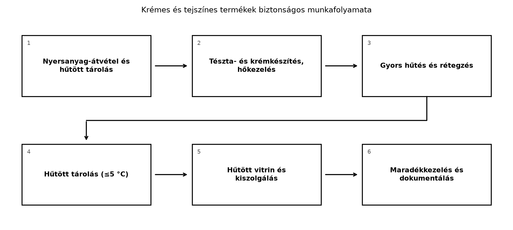

Kedd reggel a cukrászüzemben esküvői rendelést készítenek elő: 40 db krémes és egy 24 cm-es, 16 szeletes tejszínes torta. A tanuló azt a feladatot kapja, hogy a receptet a tepsihez és a szeletszámhoz igazítsa, a bepárlási, sütési és habverési veszteségekkel együtt számolja ki a nyersanyagigényt, és közben a teljes hűtési láncot betartsa. Ha a krém túl sok vagy túl kevés, az anyagköltség és az árrés romlik. Ha a hűtés megszakad, a krémes, tejszínes termék nem értékesíthető, és selejtezni kell.
A krémes és tejszínes sütemények azért kapnak külön számítási-higiéniai összefoglalót, mert itt a hagyományos receptúra-számításon túl egyidejűleg kell kezelni a bepárlást, a tésztasütés veszteségét, a habosítást, a gyors hűtést és a hűtött tárolás minden pontját. Egy rosszul kiszámolt bepárlás kevés krémet ad; egy rosszul hűtött krém viszont nemcsak minőségi, hanem élelmiszerbiztonsági hiba is.
A krémes és tejszínes termék útja a nyersanyagtól a hűtött vitrinig jól mutatja, hol kell számolni és hol kell mérni.

A diagram nem helyettesíti a mérést: minden hőfokot, időt és tömeget dokumentálni kell. A gyakorlatban a krémesnél a főzött krém gyors hűtése, a tejszínes tortánál a habosított tejszín azonnali beépítése a döntő lépés.
Definíció. Nettó tömeg: a termékben ténylegesen megmaradó, kész, értékesíthető vagy beépített tömeg. Bruttó tömeg: a nettó tömeg előállításához szükséges nyersanyag- vagy félkésztermék-tömeg, amely már tartalmazza a veszteséget is.
Definíció. Veszteségszázalék: a bruttó tömeghez viszonyított veszteség aránya. Jele , mértékegysége %.
Összefüggés.
és visszafelé:
Definíció. Bepárlási veszteség: a főzött krémeknél a hőkezelés során eltávozó víz tömegvesztesége. A kész krém tömegéből ezért a bruttó nyersanyagigényt úgy kapjuk meg, hogy a kész tömeget osztjuk -zal, nem szorozzuk -zal.
Definíció. Habosítási overrun: a habosítás során bekövetkező térfogatnövekedés. A tömeg azonban nem nő: a felvert tejszín tömege gyakorlatilag megegyezik a folyékony tejszín tömegével. A hab sűrűsége kisebb, térfogata nagyobb.
Összefüggés. Két fázis sűrűségéből közelítően:
ahol a habosítás előtti folyadék sűrűsége, a hab sűrűsége. Például ha a tejszín sűrűsége kb. (ellenőrizendő: gyártói adat), a tejszínhab sűrűsége , akkor az overrun:
Ez csak szemléltető érték, a gyártói adatlap és a tényleges zsírtartalom szerint eltérhet (ellenőrizendő).
A krémes és tejszínes termékeknél a számítás lépései mindig ugyanazok:
Az ábra előre mutatja az 1. kidolgozott példa eredményét: a sraffozott rész a veszteség, amelyet a bruttó tömegbe be kell tervezni. Az interaktív változatban a komponensek nettó tömege és vesztesége állítható, és a táblázat a hibás, szorzásos módszer (nettó · (1 + v)) eltérését is mutatja.
Az üzem krémes receptje szerint 1 tepsire a következő kész komponensek kellenek:
A kész tömeg:
Egy szelet tömege:
Ez a gyakorlatban a 60–80 g-os krémes szelet tartományába illik.
Sárgakrém bruttó nyersanyagigénye
Adott: , bepárlási veszteség .
A sárgakrémet a következő tanulási recept alapján számoljuk 1,30 kg bruttó mennyiségre (az eredeti üzemi recept arányai ellenőrizendők).
| Nyersanyag | Mennyiség (g) | Megjegyzés |
|---|---|---|
| Tej | 850 | főzési alapfolyadék |
| Cukor | 190 | édesítés, stabilizálás |
| Tojássárgája | 130 | emulzió és dúsítás |
| Vaníliás pudingpor vagy keményítő | 70 | sűrítés |
| Vaj | 64 | krémtest, íz |
| Vanília | 2 | ízesítés |
| Összesen | 1 306 g (≈1,31 kg) | bepárlás után kb. 1,2 kg |
A vanília 2 g-os mennyisége miatt az összes bruttó tömeg 1 306 g; a bepárlás után a kész krém , azaz kielégíti az 1,2 kg-os nettó igényt.
Leveles tészta bruttó nyersanyagigénye
A sült leveles tészta . A sütési és hűtési veszteség (tájékoztató érték, a vajtartalom, a hajtogatás és a sütő szerint ellenőrizendő).
Tehát 1,6 kg nyers, hajtogatott leveles tésztát kell kinyújtani. A leveles tészta nyersanyagait a Vajas és leveles tészta feldolgozása és sütése alfejezetben tanult recept alapján számíthatjuk tovább, itt félkész anyagként vesszük fel.
Tejszínhab
A habnak kész tömege kell. A habosítás a tömeget nem növeli, ezért folyékony tejszín szükséges. Térfogatban, ha a tejszín sűrűsége kb. (tájékoztató érték, ellenőrizendő a gyártói jelölés szerint):
Összefoglaló anyaghányadtáblázat:
| Komponens | Nettó mennyiség (kg) | Veszteség (%) | Bruttó nyersanyagigény (kg) |
|---|---|---|---|
| Sült leveles tészta | 1,20 | 25 (sütés) | 1,60 nyers leveles tészta |
| Sárgakrém | 1,20 | 8 (bepárlás) | 1,30 (receptúra szerint) |
| Tejszínhab | 0,60 | 0 (tömegazonosság) | 0,60 folyékony tejszín |
| Porcukor | 0,05 | 0 | 0,05 |
| Összesen | 3,05 | ≈3,55 |
A torta komponensei:
A kész torta tömege:
Egy szelet:
Felvert tészta bruttó masszája
A sült piskóta , a sütési veszteség (tájékoztató érték, a massza könnyűségétől és a sütőtől függ).
Az 50 dkg piskótamassza tanulási receptje (a klasszikus piskóta arányok szerint, ellenőrizendő):
| Nyersanyag | Mennyiség (g) | Megjegyzés |
|---|---|---|
| Tojás | 250 | habosítás, szerkezet |
| Cukor | 125 | habstabilizálás, édesítés |
| Búzaliszt | 125 | váz, keményítőtartalom |
| Összesen | 500 | sütve kb. 450 g |
Tejszínes gyümölcskrém bruttó nyersanyagai
A kész krém . A krémkészítés során az edényen és a habverőn maradó keverési veszteséget -ra becsüljük. Ezért a krémkészítéshez szükséges összetevő-tömeg:
A krém összetétele: tejszín, gyümölcspüré.
A folyékony tejszín tömege:
A gyümölcspüré tömege:
A tejszínhabnál a tömeg nem változik, tehát 0,627 kg folyékony tejszínből 0,627 kg tejszínhab készül. A habot a pürével lazító, de óvatos keveréssel dolgozzuk össze, hogy a beépített levegő ne törjön meg. A gyümölcspüré lehet friss, hőkezelt vagy gyorsfagyasztott püré; friss gyümölcsnél a tisztítási veszteséget külön is figyelembe kell venni.
Díszítés bruttó nyersanyagai
A díszítésből:
A tejszínes torta összesítője:
| Komponens | Nettó (kg) | Veszteség (%) | Bruttó (kg) |
|---|---|---|---|
| Piskótamassza | 0,45 | 10 (sütés) | 0,50 |
| Tejszínes krém | 0,85 | 5 (keverés) | 0,895 (0,627 tejszín + 0,268 püré) |
| Gyümölcsbetét | 0,20 | 0 | 0,20 |
| Díszítés | 0,20 | részben | 0,20–0,24 |
| Összesen | 1,70 | ≈1,80–1,84 |
Jogszabály. A 852/2004/EK rendelet szerint a vendéglátó üzemnek a hűtést igénylő nyersanyagokat és késztermékeket a biztonságos hőfokon kell tartani. A krémes és tejszínes termékek tojást, tejet, tejszínt és gyakran héjas gyümölcsöt tartalmaznak, ezért a romlás és a szaporodás kockázata magas (ellenőrizendő: hatályos jogszabály és NÉBIH-útmutató).
Jogszabály. A fogyasztók tájékoztatását az 1169/2011/EU rendelet szabályozza. Előre csomagolt krémes és tejszínes terméknél a teljes kötelező jelölés (összetevőlista kiemelt allergénekkel, fogyaszthatósági idő stb.) szükséges; a csomagolatlan, pultból kiszolgált vagy helyben fogyasztott terméknél is kötelező az allergénekről való tájékoztatás, amelynek módját a nemzeti szabályozás határozza meg (ellenőrizendő: hatályos hazai végrehajtási rendelet, NÉBIH-útmutató).
A leggyakoribb kritikus pontok:
A táblázat a krémes és tejszínes sütemények jellemző CCP-jeit foglalja össze az értékesítésig. A kritikus határok tanulási értékek, az üzemi HACCP-tervben a hatályos NÉBIH-útmutató és a gyártói dokumentáció szerint kell pontosítani.
| Lépés | Veszély és megelőzés | Kritikus határ (ellenőrizendő) | Monitorozás | Helyesbítő tevékenység | Dokumentum |
|---|---|---|---|---|---|
| Nyersanyag-átvétel | Mikrobás szennyezés, sérült csomagolás, túl meleg tejszín/tojás. Megelőzés: megbízható beszállító, hűtött szállítás. | Tejszín, tojás hűtőfokon, ép csomagolás, megfelelő lejárat | Hőmérő, szemrevételezés, lejárat-ellenőrzés | Visszaküldés, tétel elkülönítés | Átvételi napló |
| Főzött krém hőkezelése | Túlélő Salmonella, romlásbaktérium. Megelőzés: megfelelő hőfok–idő, keverés. | Maghőmérséklet legalább 85 °C néhány perc (ellenőrizendő) | Maghőmérő, időzítő | Tovább főzés a kritikus hőfokig | Főzési napló |
| Gyors hűtés | Mikrobaszaporodás a meleg krémben. Megelőzés: vékony réteg, jeges vízfürdő, keverés. | 60 °C-ról 10 °C alá 2 órán belül, majd 5 °C alá 4 órán belül (ellenőrizendő) | Hőmérő és óra | Jeges fürdő, kisebb adagok, ha nem tartható: selejtezés | Hűtési napló |
| Hűtött tárolás | Mikrobaszaporodás, romlás. Megelőzés: hűtőberendezés, zárható hőfok. | Legfeljebb 5 °C (ellenőrizendő) | Hűtőhőmérő naponta, tételazonosító | Hűtő újrabeállítása, termék áthelyezése, selejtezés | Hűtőnapló |
| Vitrin, kiszolgálás | Szobahőmérsékleten tartás, keresztszennyezés. Megelőzés: hűtött vitrin, fedés, külön eszköz. | Vitrin legfeljebb 5 °C, időben korlátozott kiszolgálás (ellenőrizendő) | Hőmérő, időfigyelés, FIFO | Termék visszahűtése vagy selejtezése, vitrin javítása | Napi kiszolgálási napló |
Higiénia. A tojásos, tejes, tejszínes és gyümölcsös termékeknél a nyers tojásból készült, hőkezelés nélküli krém tilos. A krémeshez használt sárgakrém hőkezelt; a tejszínes torta tejszínhabja pasztőrözött tejszínből készül. A friss gyümölcsöt mosni, tisztítani és hűtve tárolni kell. A tejszínhabhoz csak tisztára mosott, hűtött eszközt és hűtött tejszínt használjunk.
Cél: a krémes és tejszínes termék biztonságos hűtési láncának betartása az elkészítéstől a kiszolgálásig.
Eszközök és anyagok: hitelesített vagy ellenőrzött maghőmérő, hűtőhőmérő, gyorshűtő vagy jeges vízfürdő, alacsony peremű tálcák, letakarható edények, hűtött vitrin, címkéző, napló.
Higiéniai munkakezdés: munkaruha, hajháló, ékszerek levétele, kézmosás, felületek és eszközök tisztaságának ellenőrzése.
Lépések:
Figyelem. A forró krémet ne tedd közvetlenül mélyhűtőbe, és ne hűtsd zárt, vastag edényben, mert a hőmérséklet lassan csökken. A keverés közben a gőz égési sérülést okozhat; hosszú nyelű eszközt használj.
A krémes és tejszínes sütemény minőségét mindig hűtött, friss állapotban kell ellenőrizni.
Hiba: a krémes krém folyós, a szelet vágáskor
kicsúszik.
Ok: a sárgakrém nem forrt be, vagy a tejszínhab
megtört, és a savó kiengedett.
Megelőzés/javítás: a sárgakrémet a csirizéshez
szükséges hőfokig főzd, a tejszínhabot csak óvatosan keverd a kihűlt
krémhez. Ha a krém már folyós, hűtőben dermeszthető, de ételbiztonsági
kockázat esetén selejtezni kell.
Hiba: a tejszínes torta piskótája elázott.
Ok: a tejszínes vagy gyümölcsös krém túl nedves, vagy a
lapokat nem szigetelted, és a torta sokáig állt összeállítás
előtt.
Megelőzés: a piskótalapot vékonyan meg kell kenni
vajjal, kakaóvajjal vagy leheletnyi csokoládéval, és a gyümölcsöt
lecsepegtetve kell beépíteni.
Hiba: a bepárlást rosszul számolják.
Ok: a kész krém tömegét
kg-kal veszik fel, nem pedig
kg-mal. A szorzásos módszer kisebb mennyiséget ad, mert a százalékot nem
a bruttóra vetíti.
Megelőzés: mindig az
képletet használd.
Hiba: a kész krémes a hűtőben 12 °C-on
marad.
Ok: a hűtő ajtaja sűrűn nyitva, a berendezés
túltöltött, vagy a levegő nem cirkulál.
Megelőzés: a hűtőt ne töltsd túl, a termékek között
hagyj légrést, a hőfokot naponta ellenőrizd. Ha a lánc megszakadt, a
terméket ne értékesítsd.
Egy nyári esküvői rendelésen 40 db krémes és 16 szelet tejszínes torta készült. A gyártás során a sárgakrémet 86 °C-ra melegítették, majd a tanuló a krémet magas peremű, forró edényben hagyta hűlni. A maghőmérő 20 perc után még 68 °C-ot mutatott, a krém lassan hűlt. A művezető áthelyezte a krémet alacsony peremű tálcába, jeges vízfürdőre tette, és percenként keverte. 45 perc alatt a hőmérséklet 12 °C-ra csökkent, majd a hűtőben 5 °C alá hűlt. A tételt aznap értékesítették, és a hűtési napló alapján a hűtési lánc megszakítás nélkül zárult. Ha a krémet a forró edényben hagyták volna, a hűtési idő meghaladta volna a megengedettet, és a tételt selejtezni kellett volna.
1. feladat (A)
Definiáld a nettó, bruttó és veszteségszázalék fogalmát, és írd fel a
közöttük lévő összefüggést.
2. feladat (A)
Egy krémes tételnél a kész termék tömege 2,54 kg, és 36 db szeletre
vágják. Mennyi egy db tömege?
3. feladat (B)
Egy 60×40 cm-es tepsiből 20 db krémes készül. A sárgakrém nettó tömege
1,2 kg, bepárlási vesztesége 10%. A sült leveles tészta tömege 0,8 kg,
sütési vesztesége 20%. Számítsd ki a sárgakrém bruttó tömegét, a nyers
leveles tészta bruttó tömegét, és a kész krémes szelettömegét, ha a
porcukor 0,05 kg.
4. feladat (B)
Egy 20 cm-es, 12 szeletes tejszínes torta kész kréme 0,6 kg, a keverési
veszteség 5%, és a krém 70% tejszínt, 30% gyümölcspürét tartalmaz.
Számítsd ki, mennyi folyékony tejszínt és mennyi gyümölcspürét kell
előkészíteni.
5. feladat (C)
Egy tanuló a főzött sárgakrémet 86 °C-ra melegíti, majd
szobahőmérsékleten, 15 cm vastagon, magas peremű edényben hűti. Négy óra
múlva a maghőmérséklet 28 °C. Értékeld a folyamatot. Milyen hibák
történtek? Mi a helyesbítő tevékenység?
6. feladat (D – gyakorlati
kalkuláció-előkészítés)
Az 1. kidolgozott példa krémes adataival készítsd el az egy tepsire jutó
nyersanyagköltség-számítást. A félkész nyers leveles tésztát 1 400
Ft/kg, a tejet 450 Ft/kg, a cukrot 300 Ft/kg, a tojássárgáját 1 800
Ft/kg, a pudingport 1 500 Ft/kg, a vajat 4 500 Ft/kg, a vaníliát 20 000
Ft/kg, a folyékony tejszínt 2 200 Ft/kg, a porcukrot 400 Ft/kg áron
számold. Add meg az 1 db krémesre jutó anyagköltséget. Ez a számítás a
Termékkalkuláció a cukrászatban: önköltség és
eladási ár alfejezet anyagköltség-részét készíti elő.
1. feladat
Nettó: a kész termék vagy félkész termék tényleges tömege. Bruttó: a
nettó előállításához szükséges nyersanyag- vagy félkész tömeg. A
veszteségszázalék a bruttó tömeghez viszonyított veszteség.
2. feladat
Adott:
,
.
Egy db krémes 71 g.
3. feladat
Sárgakrém:
.
Leveles tészta:
.
Kész tömeg:
.
Szelettömeg:
.
Ellenőrzés: a 103 g-os krémes nagyobb szelet, a 20 db-os vágásnál reális.
4. feladat
Bruttó krém:
.
Tejszín:
.
Gyümölcspüré:
.
Ellenőrzés: megfelel a bruttó krémtömegének.
5. feladat
A főzési hőfok (86 °C) megfelelő tanulási érték lehet. A hűtés azonban
hibás: magas réteg, magas peremű edény, keverés nélkül,
szobahőmérsékleten. A hőmérséklet 4 óra alatt 28 °C-ig csökkent, ami a 2
órán belüli 10 °C alá hűtést nem teljesítette. A helyesbítő tevékenység:
azonnali jeges vízfürdő, vékony réteg, folyamatos keverés, majd hűtő. Ha
a kritikus idő már eltelt, a terméket csak akkor szabad felhasználni, ha
az üzemi HACCP-utasítás szerint még biztonságos; ellenkező esetben
selejtezni kell.
6. feladat
A krémes példa bruttó nyersanyagai alapján:
| Nyersanyag | Bruttó (kg) | Ár (Ft/kg) | Költség (Ft) |
|---|---|---|---|
| Nyers leveles tészta | 1,60 | 1 400 | 2 240 |
| Tej | 0,85 | 450 | 382,5 |
| Cukor | 0,19 | 300 | 57 |
| Tojássárgája | 0,13 | 1 800 | 234 |
| Pudingpor | 0,07 | 1 500 | 105 |
| Vaj | 0,064 | 4 500 | 288 |
| Vanília | 0,002 | 20 000 | 40 |
| Folyékony tejszín | 0,60 | 2 200 | 1 320 |
| Porcukor | 0,05 | 400 | 20 |
| Összesen | 4 686,5 |
Egy db krémes anyagköltsége:
Ez csak közvetlen anyagköltség; az önköltséghez a teljes rezsit, munkabért, csomagolást és a vállalkozás egyéb költségeit is hozzá kell adni a Termékkalkuláció a cukrászatban: önköltség és eladási ár szerint.
A krémes és tejszínes sütemények anyaghányad-számításának alapja a kész nettó tömegből való visszaszámítás a veszteségeken keresztül. A bruttó nyersanyagigényt mindig az képlettel számoljuk, mert a veszteségszázalék a bruttó tömegre vetített érték. A főzött krémnél a bepárlás (például 8–10%), a leveles tésztánál a sütési veszteség (például 20–25%), a tejszínes krémnél a keverési veszteség (például 5%) jellemző tanulási érték. A habosítás térfogatot növel, de a tömeg gyakorlatilag nem változik. A krémes és tejszínes termékek kritikus pontjai: a hőkezelés, a gyors hűtés, a hűtött tárolás és a hűtött vitrin. Tanulási hőfokok: főzés legalább 85 °C, tárolás legfeljebb 5 °C, gyorshűtés 60 °C-ról 10 °C alá 2 órán belül. Minden hőfok- és időérték ellenőrizendő az üzemi HACCP-utasítás és a hatályos NÉBIH-útmutató szerint. A számított anyagköltség a Termékkalkuláció a cukrászatban: önköltség és eladási ár alfejezethez vezet tovább, ahol az önköltséget a munkabérrel, rezsivel és az ÁFA-val egészítjük ki.
A szöveg a magyar cukrászati szakgyakorlat, a 852/2004/EK higiéniai rendelet, az 1169/2011/EU fogyasztói tájékoztatási rendelet, a NÉBIH vendéglátóipari útmutatói, valamint a Magyar Élelmiszerkönyv cukrászati termékekre vonatkozó előírásai alapján közöl tanulási tartalmat. A konkrét hőfok-idő kritikus határok, a veszteségszázalékok, a tejszín sűrűsége, a tömegtűrések és a vitrin időkorlátai üzemi vagy gyártói adattól függenek, ezért ellenőrizendők. A hagyományos krémes és tejszínes receptek arányai a szakmában elterjedt tanulási receptek, nem hatósági előírások.